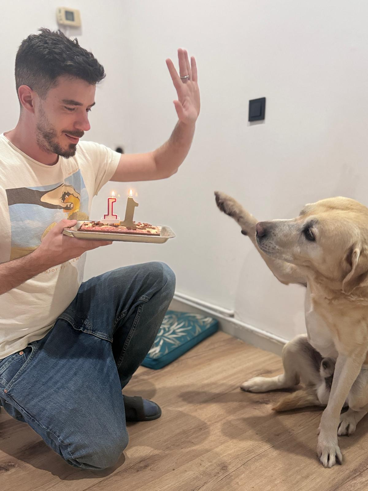
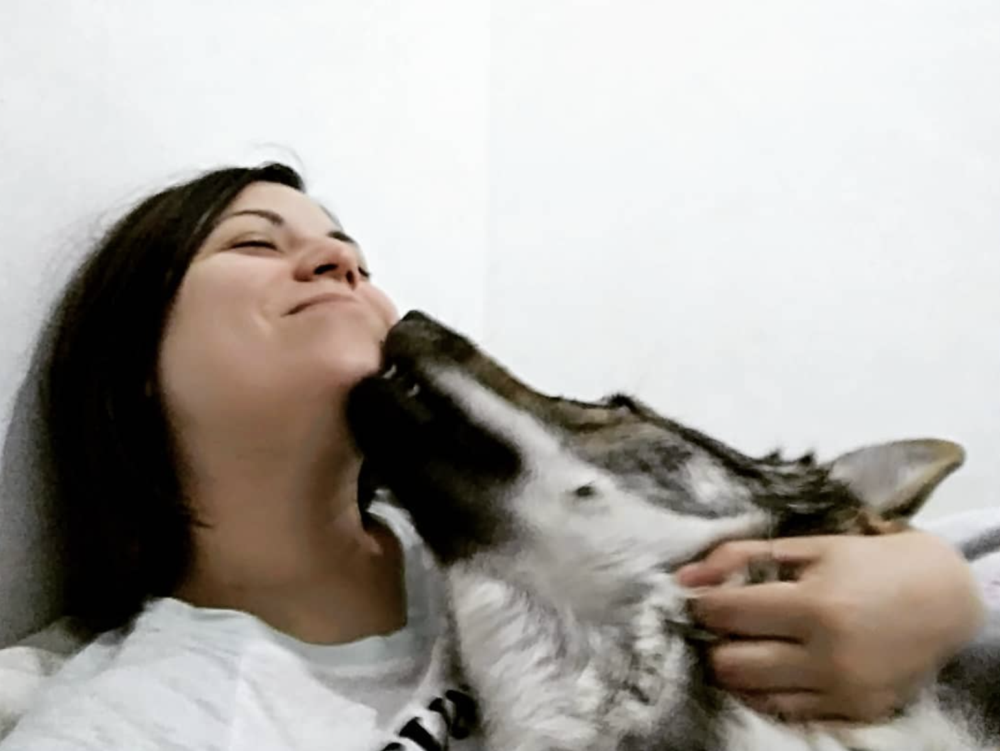
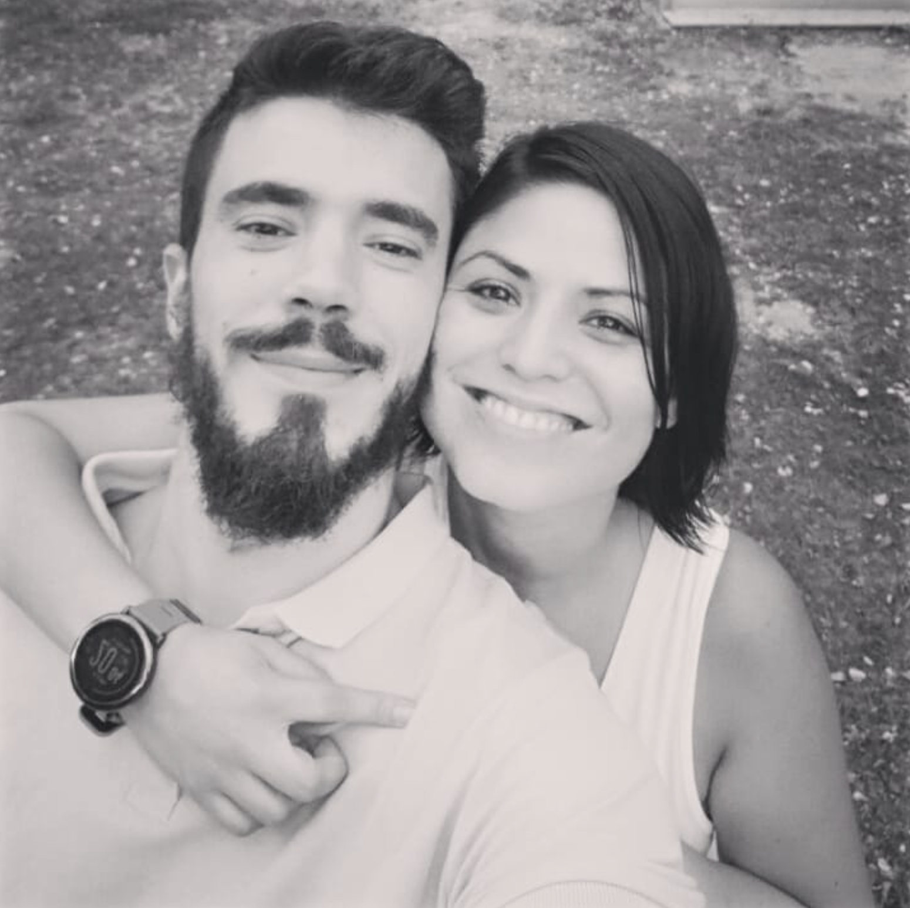

⚔️ Una historia que merece ser contada ⚔️
Forjada en de manera épica, sellada para siempre
Todo empezó con un /invite. En algún momento, en el
servidor de Zul'jin, un personaje apareció en nuestras vidas. Ese era
Julito. Lo que empezó siendo unas raids tontorronas y
unas risas en el Discord acabó convirtiéndose en una amistad de las de
verdad, de esas que trascienden la pantalla y los píxeles.

"Habeis pulleado sin comida, gracias"
— Shideya, en el kill de Will of Emperor
Noches de raids que se alargaban hasta las tantas, wipes absurdos que acababan en carcajadas, y esa sensación de que, aunque estuvieras cada uno en su casa, estabas con tu grupo. Con tu guild. Con tus colegas.
[PLACEHOLDER: Añade aquí alguna anécdota concreta de vuestros primeros días jugando juntos — algún wipe épico, algún momento mítico, alguna frase del grupo...]
Y entonces llegó Mili. No vino de Azeroth, no la conocimos en una raid, pero se ganó al grupo más rápido que Thrall comiéndose los restos de un chuletón. Julito nos la presentó y, como pasa con la buena gente, encajó como si siempre hubiera estado ahí.

De repente el grupo ya no era solo de WoW: eran quedadas anuales, barbacoas, juegos de mesa, y Mili siempre ahí, aguantando las chapas frikis con una sonrisa.
[PLACEHOLDER: Algún recuerdo de cuando Mili se integró en el grupo — alguna anécdota divertida, alguna quedada memorable, algún viaje juntos...]
Hay historias que se cuentan una y otra vez. Momentos que, cada vez que los recordáis, siguen arrancando las mismas carcajadas. Estos son algunos de esos logros desbloqueados:
[Pirineos, la primera vez que todos nos conocimos, y como no, hubo carne de por medio, risas, alcohol e incluso un submarino]
[Mel'jarak, Heart of Fear, fue de los últimos wipes de Delayed Penta, al final vimos que lo mejor era comer chuletones]
[First kill de Will of Emperor, entre otros, tampoco buscábamos ser top 1, pero fue una pequeña victoria]
[Partida al risk que duró durante interminables horas]

Y ahora llega el momento. La raid más importante de vuestras vidas. Sin respawn, sin wipe, sin volver atrás. Pero esta vez no hace falta estrategia, ni guía de Wowhead, ni consumibles. Solo hace falta lo que ya tenéis: ganas de vivir esta aventura juntos.
Que sepáis que vuestro grupo siempre estará ahí. Para buffearos cuando lo necesitéis, para hacer de off-tank cuando la vida se ponga chunga, y para celebrar cada logro como si fuera un server first.
Enhorabuena, Mili y Julito.
Os lo merecéis todo.
Habéis completado la misión "Unir vuestras vidas". Como recompensa, vuestra party os ha preparado algo especial:
Una experiencia de cata de vinos y comida para dos. Porque después de tantas batallas, os merecéis sentaros, brindar y disfrutar como los campeones que sois.
Os queremos, . 🖤